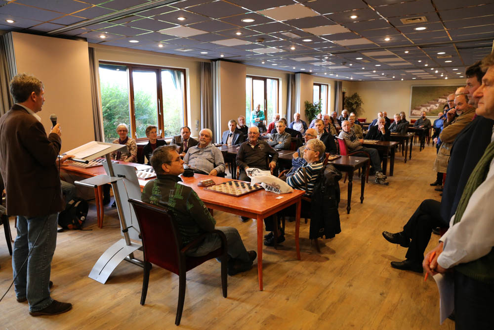

")

Program
Program
Sunday 3 November arrival
- 15 hour opening- ceremony and fast draughts
Monday 4 November
- 10 hour fist round
- 18 hour second round
Tuesday 5 November
- 10 hour third round
Wednesday 6 November
- 10 hour fourth round
- 18 hour vifth round
Thursday 7 November
- 10 hour sixth round
Friday 8 November
- 10 hour seventh round
- 18 hour eight round
Saturday 9 November
- 10 hour ninth round
- 15 hour closing and awards ceremony
Sunday 10 November departure
EC veterans, youth and students up to 26 years
The KNDB organizes in cooperation with the Krim Holiday Resort and Draughtsclub Oosterend on Texel the European Championship for veterans, youth and students up to 26 years. The tournament will be held from Sunday 3rd to Saturday 9th of November 2013 at the Krim Holiday Resort in De Cocksdorp.
It is played according to the Swiss system with a time of play of 80 minutes plus one minute per move (Fischer) system. At the tournament for veterans players may participate who achieved the age of 50 years
At the tournament for youth and students, players may participate in the age to 26 years. Men and women play a separate tournament. Students must be registered at an educational subsistence.
Living expenses:
- In a chalet at an occupancy of 4 persons: € 24.50 pppn
- With an occupancy of 2 persons: € 39.50 pppn
- In hotel Molenbos for occupancy of 2 people per room: € 42.00 pppn
- With an occupancy of 1 person per room: € 47.00 pppn
- Prices include VAT, tourist tax and sheets.
The costs per person per day for food for breakfast, lunch and dinner (excluding drinks) is € 27.50.
The entry fee is € 40 for veterans and € 20 for juniors and students, for fast draughts tournament € 10. Registration before October 1, 2013 at the Head Office of the KNDB: PO Box 326, 3900 AH Veenendaal or e-mail: bondsbureau@kndb.nl. Please notify how you want to stay.
The list of participants can be found here.
Opening at Sunday 3 November:
